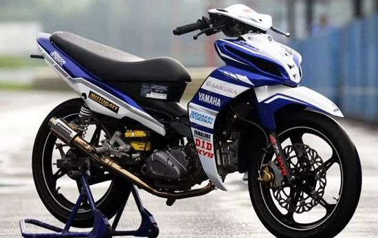

Apa itu ROADRACE?
road race adalah balapan motor yang dilakukan di lintasan aspal. Road race sendiri memiliki makna “balap jalanan” yang dimaksud balap jalanan adalah balapan yang menggunakan motor produksi masal "bukan prototype" seperti di ajang balap dunia Motogp, yang dilakukan di jalanan umum namun resmi. Road race di Indonesia sendiri sering kali diselenggarakan di hari Sabtu dan Minggu. Motor yang digunakan untuk road race adalah motor produksi masal atau yang dijual secara umum di suatu negara, yang dimodifikasi dan diatur dalam buku peraturan. Road race di Indoensia sendiri telah ada sejak tahun 1970 an lalu. Dikatakan road race lantaran dari awal balapan ini memang menggunakan jalan raya sebagai lintasannya. Namun seiring perkembangan jaman, kini banyak dibangun sirkuit permanen khusus road race. Peraturan yang ada balap road race telah diatur oleh Ikatan Motor Indonesia [IMI] pusat. Baik itu meliputi regulasi tata perlombaan, regulasi peraturan pembalap, dan regulasi teknis seperti peraturan modifikasi apa saja yang dibolehkan. Di Indonesia sendiri, road race memiliki banyak event. Mulai dari Kejurda Provinsi, Kejurnas Motoprix Region, dan level tertinggi road race di tanah air yakni Indoprix. Namun tak hanya itu saja, banyak club event pabrikan motor maupun club event mandiri yang juga menggelar hajatan road race. Bisa kita lihat seperti Yamaha Cup Race [YCR], dan Honda Racing Championship [HRC]. Adapun club event ada banyak sekali di daerah daerah yang sering menyelenggarakan kejuaraan tingkat daerah, seperti Kapota dan Noname Indonesia di Jawa Barat, lalu ada Gaduro Sport Club di Jawa Tengah, VSC Yogyakarta dan Javanoa Sport Club Jawa Timur.